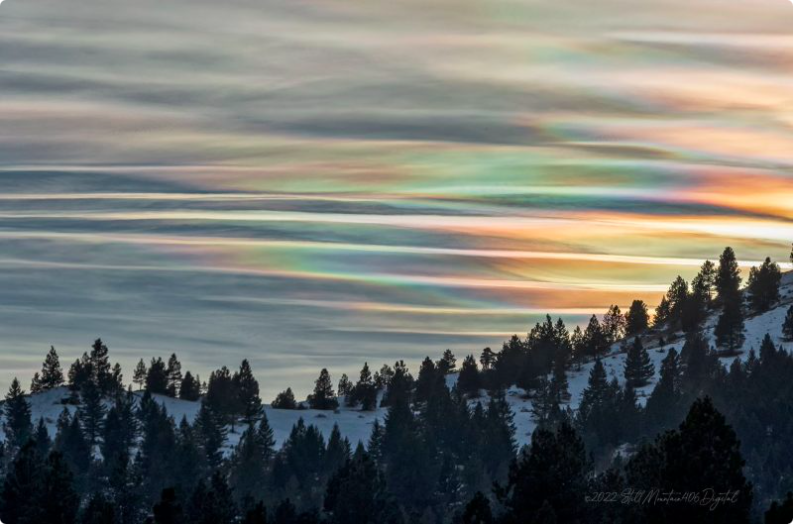

There are over 10 Major cloud tyes.
Clouds are Classified by their alitude and texture.Since the differnttypes of clouds have various elivatioons, the Clouds have differnt appearances. Its not that hard to identify the types of clouds.
| Type of Cloud | Cirrus | Cirrostratus | Cirrocumulus |
|---|---|---|---|
| Apperance | wispy, feathery | widespread, veil-like layer | layered clouds permeated with small cumuliform lumpiness |
| Structure | composed entirely of ice crystals | hexagonal-shaped ice crystals act as a prism |
| Type of Cloud | Altosratus | Alocumulus |
|---|---|---|
| Apperance | flat and uniform type texture | |
| Structure |
| Type of Cloud | Stratus | Cumulus | Stratocumulus | Nimbostratus |
|---|---|---|---|---|
| Apperance | ||||
| Structure |
Sky watchers often report seeing rainbow colors in clouds. if the rainbow-like colors are randomly distributed, and if the sun is nearby in the sky what you're seeing is likely an iridescent cloud. A rainbow cloud can occur because of something called cloud iridescence. 1
It usually happens in altocumulus, cirrocumulus, lenticular and cirrus clouds. Iridescent clouds happen because of diffraction, a phenomenon that occurs when small water droplets or small ice crystals scatter the sun's light.
It usually happens in altocumulus, cirrocumulus, lenticular and cirrus clouds. Cloud iridescence is relatively rare. The cloud must be thin and have lots of water droplets or ice crystals of about the same size. When that happens, the sun's rays encounter just a few droplets at at time. For this reason, semi-transparent clouds or clouds that are just forming are the ones most likely to have iridescence.2 
When parts of clouds are thin and have similar size droplets, diffraction can make them shine with colours like a corona. In fact, the colours are essentially corona fragments. The effect is called cloud iridescence or irisation, terms derived from Iris the Greek personification of the rainbow. The usually delicate colours can be in almost random patches or bands at cloud edges. They are only organised into coronal rings when the droplet size is uniform right across the cloud. The bands and colours change or come and go as the cloud evolves. They occur most often in altocumulus, cirrocumulus and especially in lenticular clouds. Iridescence is seen mostly when part of a cloud is forming because then all the droplets have a similar history and consequently have a similar size. Sometimes iridescence can be seen far from the sun but is most frequent near to it. As for coronas, search safely by hiding the sun behind a building and, even better, also viewing the reflection of the sky in water. Very much rarer iridescence is that of nacreous or mother-of-pearl clouds. They can glow very brightly and are far higher than ordinary tropospheric clouds. Iridescence is also seen in rocket exhaust trails. 3